워드프로세서-(구-1급) (2016-06-25 기출문제)
1과목: 워드프로세싱 일반
1. 다음 중 워드프로세서의 특징으로 옳지 않은 것은?
- 손쉽게 다양한 문서 형태를 만들 수 있다.
- 작성된 문서의 보존 및 검색이 유리하다.
- 정보통신망을 이용하여 공유할 수 없기 때문에 보안성이 우수하다.
- 문서의 통일성과 체계를 갖출 수 있다.
(정답률: 90%)

2. 다음 중 워드프로세서의 표 기능에 대한 설명으로 옳지 않은 것은?
- 표를 만든 후 표의 서식을 다양하게 변경할 수 있다.
- 표에서 같은 행이나 열에 있는 두 개 이상의 셀을 하나의 셀로 결합할 수 있다.
- 표 속성 창에서 확대나 축소 비율, 그림자를 설정할 수 있다.
- 표 안에서 새로운 중첩된 표를 만들고 편집할 수 있다.
(정답률: 71%)
3. 다음 중 워드프로세서의 편집 관련 용어에 대한 설명으로 옳은 것은?
- 마진(Margin) : 프린터에서 한 면 단위로 프린터 용지를 위로 올리는 기능
- 영문균등(Justification) : 단어 사이의 간격을 조절하여 워드랩으로 인한 공백을 없애고 문장의 양쪽 끝을 맞추는 기능
- 홈베이스(Home Base) : 문서의 균형을 위해 비워두는 페이지의 상·하·좌·우 공백
- 옵션(Option) : 문단의 각 행 중에서 오른쪽 또는 왼쪽 끝열이 정렬되지 않은 상태
(정답률: 78%)
4. 다음 중 워드프로세서의 메일 머지(Mail Merge) 기능에 대한 설명으로 옳지 않은 것은?
- 메일 머지를 수행하기 위해서는 데이터 파일과 서식 파일이 필요하다.
- 데이터 파일은 서식 파일에 대입될 개인별 이름이나 주소 등을 담고 있는 파일이다.
- 서식 파일은 메일 머지 되어 나올 내용에서 공통적으로 들어갈 본문 내용을 기재한 파일이다.
- 메일 머지에 쓸 수 있는 서식 파일에는 윈도우의 주소록과 Outlook 주소록, 한글 파일, 엑셀 파일 등이 있다.
(정답률: 74%)
5. 다음 중 아래 보기의 내용이 설명하는 워드프로세서의 용어로 옳은 것은?
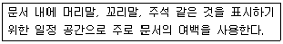
- 색인(Index)
- 스풀링(Spooling)
- 하드 카피(Hard Copy)
- 보일러 플레이트(Boiler Plate)
(정답률: 66%)
6. 다음 중 KS X 10⑤-1(유니코드)에 대한 설명으로 옳은 것은?
- 정보 교환을 할 때 충돌이 발생할 수 있다.
- 한글, 한자는 2바이트, 영문과 공백은 1바이트로 처리한다.
- KS X 1001 완성형 코드에 비해 기억 공간을 적게 차지한다.
- 국제 표준 코드로 사용된다.
(정답률: 71%)
7. 다음 중 워드프로세서의 편집기능에 대한 설명으로 옳지 않은 것은?
- 사전 기능은 단어를 입력하면 의미를 확인할 수 있게 해 준다.
- 맞춤법 검사 기능은 작성된 문서와 워드프로세서에 포함되어 있는 사전과 비교해 틀린 단어를 찾아주는 기능이다.
- 다단 편집이란 하나의 화면을 여러 개의 창으로 나누어 두 개 이상의 파일을 불러와 편집할 수 있는 기능이다.
- 수식 편집기는 문서에 복잡한 수식이나 화학식을 입력할 때 사용하는 기능이다.
(정답률: 67%)
8. 다음 중 워드프로세서의 용어에 대한 설명으로 옳은 것은?
- 개행(Turnover)은 새 문단이 시작될 때만 하나, 별행(New Line)은 한 문단이나 문장의 중간에서도 할 수 있다.
- OLE 기능은 다른 응용 프로그램에서 작성한 그림이나 표 등을 연결하거나 삽입하여 사용할 수 있게 하는 기능이다.
- 매크로(Macro)는 자주 쓰이는 문자열을 따로 등록해 놓았다가 준말을 입력하면 본말 전체가 입력되도록 하는 기능이다.
- 문자 피치(Pitch)는 1인치당 인쇄되는 문자수를 말하며, 피치 수가 증가할수록 문자들은 커진다.
(정답률: 66%)
9. 다음 중 워드프로세서의 화면 표시기능에 대한 설명으로 옳지 않은 것은?
- 문서를 작성할 때 스크롤바를 이용하여 화면을 상, 하, 좌, 우로 이동할 수 있다.
- 편집과정에서 생긴 공백이나 문단 등은 조판부호를 표시하여 확인할 수 있다.
- 편집한 문서는 인쇄하기 전에 미리보기를 통해 화면에서 미리 출력해 볼 수 있다.
- 화면을 확대하면 인쇄물 결과에도 영향을 준다.
(정답률: 82%)
10. 다음 중 전자출판의 특징으로 옳지 않은 것은?
- 제공자와 사용자간의 상호대화가 가능한 양방향 매체이다.
- 출판 내용에 대한 추가 및 수정이 용이하다.
- 출판과 보관비용이 많이 증가하지만 다른 매체와 결합이 쉽다.
- 출판 과정의 개인화가 가능하다.
(정답률: 71%)
11. 다음 중 워드프로세서를 이용한 문서 작성법의 설명으로 옳지 않은 것은?
- 문장은 되도록 간결하게 쓰고 긴 문장은 적당히 끊어 작성한다.
- 작성자의 의사가 명확히 표시되어야 하며 이해하기 쉬운 용어를 사용한다.
- 문서의 구성은 두문, 본문, 결문 등으로 구분한다.
- 단어마다 한자, 영어를 넣어 작성하여 문서의 내용을 가급적 어렵게 인식되도록 한다.
(정답률: 84%)
12. 다음 중 아래의 보기에서 설명하는 문서관리 절차과정으로 옳은 것은?
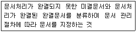
- 보관
- 구분
- 이관
- 편철
(정답률: 77%)
13. 다음 중 문서의 종류별 설명으로 옳지 않은 것은?
- 명령(지시)문서는 조직에서의 계획이나 기획 등의 명령을 지시하기 위한 문서이다.
- 보고문서에는 장표, 전표, 일계표 등이 속한다.
- 연락문서는 업무를 연락하고 의사소통을 위한 것으로 업무연락서, 통지서 등이 있다.
- 기록문서는 기록과 보존을 위한 것으로 인사기록 카드가 속한다.
(정답률: 74%)
14. 다음 중 문서 구성에서 기획서 작성 방법으로 옳지 않은 것은?
- 최대한 전문용어를 많이 사용하여 수준 높은 문서로 보이도록 작성한다.
- 결론을 논리적으로 구성하고 사실에 근거하여 명확하게 구성한다.
- 구체적이고 측정 가능한 자료를 사용하고 성취 가능한 내용을 적는다.
- 핵심 내용을 압축하여 명확히 하고 뒷받침하는 내용을 구분하여 핵심을 강조한다.
(정답률: 85%)
15. 다음 중 공문서 구성에서 두문에 해당하는 내용으로 옳은 것은?
- 행정기관명
- 제목
- 시행일자
- 발신명의
(정답률: 52%)
16. 다음 중 전자문서에 대한 설명으로 옳지 않은 것은?
- 전자문서인 경우에 전자적 방법으로 쪽번호 또는 발급번호를 표시할 수 있다.
- 각급 행정기관에서는 전자문서에 사용하기 위하여 전자이미지관인을 가진다.
- 대체적으로 전자문서인 경우에는 처리과의 기안자나 문서의 수신·발신업무를 담당하는 사람이 전자이미지관인을 찍는다.
- 모든 전자문서는 개인 문서함에 보관하면 안 되고 공통 문서함에 보관하여 누구나 열람할 수 있게 한다.
(정답률: 74%)
17. 다음 중 문서 파일링 방법에 관한 설명으로 옳지 않은 것은?
- 명칭별 분류법은 거래자나 거래 회사명에 따라 첫머리 글자를 기준으로 분류한다.
- 주제별 분류법은 문서의 내용에서 주제를 결정하여 주제를 기준으로 분류한다.
- 혼합형 분류법은 문자와 번호를 함께 써서 작성한 날짜별로 분류한다.
- 지역별 분류법은 거래처의 지역위치나 지역범위에 따른 기준으로 분류한다.
(정답률: 68%)
18. 다음 중 공문서의 성립 및 효력 발생에 관한 설명으로 옳지 않은 것은?
- 공문서의 효력 발생 시기는 다른 법령에 특별한 규정이 없는 한 수신자에게 도달되는 시점이다.
- 공고문서는 고시, 공고가 있은 후 7일이 경과한 날부터 효력이 발생한다.
- 문서는 결재권자가 해당 문서에 서명의 방식으로 결재함으로써 성립한다.
- 전자문서의 효력발생 시점은 수신자의 컴퓨터에 도달하는 시점을 원칙으로 한다.
(정답률: 73%)
19. 다음 중 <보기 1>의 문장이 <보기 2>의 문장으로 수정 되기 위해 필요한 교정 부호들로만 짝지어진 것으로 옳은 것은?
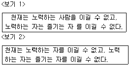
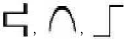
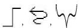
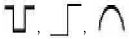
(정답률: 77%)
20. 다음 중 서로 상반되는 의미의 교정 부호로 짝지어 지지 않은 것은?
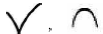
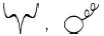
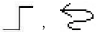
(정답률: 78%)
2과목: PC 운영 체제
21. 다음 중 아래의 보기에서 설명하는 한글 Windows 7 운영체제의 특징으로 옳은 것은?
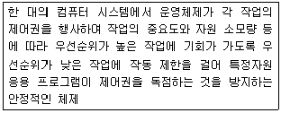
- 선점형 멀티태스킹
- 그래픽 사용자 인터페이스
- 보안이 강화된 방화벽
- 컴퓨터 시스템과 장치 드라이버의 보호
(정답률: 82%)
22. 다음 중 아래의 보기에서 한글 Windows 7의 부팅 과정에 대한 순서로 옳은 것은?
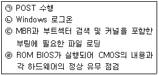
- (ㄱ) → (ㄴ) → (ㄷ) → (ㄹ)
- (ㄴ) → (ㄱ) → (ㄹ) → (ㄷ)
- (ㄷ) → (ㄹ) → (ㄱ) → (ㄴ)
- (ㄹ) → (ㄱ) → (ㄷ) → (ㄴ)
(정답률: 49%)
23. 다음 중 한글 Windows 7의 바로 가기 키에 대한 설명으로 옳지 않은 것은?
- <윈도우 로고> + <D> : 열려있는 모든 창을 최소화하여 바탕 화면이 표시되거나 이전 크기로 복원
- <Alt> + <Tab> : 실행중인 각 프로그램 간의 작업 전환
- <Ctrl> + <Shift> + <ESC> : 작업관리자 창 바로 열기
- <윈도우 로고> + <R> : 윈도우 재부팅
(정답률: 62%)
24. 다음 중 한글 Windows 7의 바탕화면에 있는 아이콘을 정렬하는 기준으로 옳지 않은 것은?
- 항목 유형 순으로 정렬
- 크기 순으로 정렬
- 수정한 날짜 순으로 정렬
- 이름의 길이 순으로 정렬
(정답률: 71%)
25. 다음 중 한글 Windows 7에서 바로 가기 아이콘을 만드는 방법으로 옳지 않은 것은?
- 파일을 선택한 후 바로 가기 메뉴에서 [바로 가기 만들기]를 선택하여 작성
- 바로 가기 아이콘을 작성할 항목을 <Ctrl> + <Alt>키를 누른 채 드래그 앤 드롭하여 작성
- 파일을 선택한 후 [파일] 메뉴에서 [바로 가기 만들기]를 선택하여 작성
- 파일을 마우스 오른쪽 버튼으로 드래그 앤 드롭하여 나타나는 메뉴에서 [여기에 바로 가기 만들기]를 선택하여 작성
(정답률: 67%)
26. 다음 중 한글 Windows 7의 [휴지통 속성] 창에서 수행 할 수 있는 작업으로 옳지 않은 것은?
- 삭제 확인 대화 상자의 표시 설정
- 휴지통의 바탕화면 표시 설정
- 각 드라이브의 휴지통 최대 크기 설정
- 파일을 휴지통에 버리지 않고 바로 제거하는 기능 설정
(정답률: 63%)
27. 다음 중 한글 Windows 7에서 파일과 폴더에 대한 설명으로 옳지 않은 것은?
- 파일이란 서로 관련성 있는 정보의 집합으로 디스크에 저장되는 기본 단위이다.
- 파일은 텍스트 문서, 사진, 음악, 프로그램 등이 될 수 있다.
- 폴더란 서로 관련 있는 파일들을 체계적으로 관리 할 수 있는 저장 장소이다.
- 폴더 안에 또 다른 하위 폴더와 파일을 만들 수 있으며 바탕화면, 네트워크, 휴지통, Windows 탐색기 등에서 만들 수 있다.
(정답률: 67%)
28. 다음 중 한글 Windows 7에서 파일이나 폴더를 삭제 할 수 없는 경우에 대한 설명으로 옳은 것은?
- 다운로드한 프로그램 파일을 디스크 정리로 삭제 할 경우
- 휴지통에 있는 특정 파일을 선택한 후에 <Delete> 키를 눌러 삭제할 경우
- 현재 편집 중인 문서 파일이 포함된 폴더를 선택한 후에 <Delete> 키를 눌러 삭제할 경우
- 모든 권한이 설정된 특정 폴더의 바로 가기 메뉴에서 [삭제]를 선택하여 삭제하는 경우
(정답률: 70%)
29. 다음 중 한글 Windows 7에서 사용하는 기본 프린터의 설정에 관한 설명으로 옳지 않은 것은?
- 기본 프린터로 사용할 프린터를 마우스 오른쪽 단추로 클릭한 다음 [기본 프린터로 설정]을 클릭한다.
- 현재 기본 프린터를 해제하려면 다른 프린터를 기본 프린터로 설정하면 된다.
- 인쇄 시 특정 프린터를 지정하지 않으면 자동으로 인쇄 작업이 기본 프린터로 전달된다.
- 기본 프린터는 2개 이상 지정이 가능하다.
(정답률: 77%)
30. 다음 중 한글 Windows 7에서 [그림판] 프로그램의 사용에 관한 설명으로 옳지 않은 것은?
- 그림의 특정 영역을 선택하여 저장할 수 있다.
- 마우스 오른쪽 단추를 누르고 드래그하면 색2(배경색)로 그림을 그릴 수 있다.
- 레이어 기능을 이용하여 그림 요소를 구성할 수 있다.
- 그림의 특정 영역을 사각형의 형태로 선택하여 복사할 수 있다.
(정답률: 55%)
31. 다음 중 한글 Windows 7에서 압축 프로그램에 대한 설명으로 옳지 않은 것은?
- 압축은 텍스트뿐만 아니라 음악, 사진, 동영상 파일 등도 압축할 수 있다.
- 압축할 때 암호를 지정하거나 분할 압축을 할 수 있다.
- 종류에는 Winzip, WinRAR, PKZIP 등이 있다.
- 암호화된 압축 파일을 전송할 경우에 시간 및 비용의 증가효과를 얻을 수 있다.
(정답률: 74%)
32. 다음 중 한글 Windows 7의 디스크 조각 모음과 관련된 내용으로 옳지 않은 것은?
- 디스크 조각 모음이 진행 중인 동안에는 컴퓨터를 사용할 수 없다.
- NTFS, FAT, FAT32 이외의 다른 파일 시스템으로 포맷된 경우와 네트워크 드라이브에 대해서는 디스크 조각 모음을 실행할 수 없다.
- 디스크 조각 모음을 수행하면 디스크 공간의 최적화를 이루어 접근 속도와 안전성이 향상된다.
- 디스크 조각 모음을 정해진 요일이나 시간에 자동으로 수행할 수 있도록 예약을 설정할 수 있다.
(정답률: 54%)
33. 다음 중 한글 Windows 7의 [접근성 센터] 창에서 할 수 있는 기능에 대한 설명으로 옳지 않은 것은?
- Windows 로그온 시 자동으로 돋보기 기능을 시작 할 수 있게 설정할 수 있다.
- 내레이터 시작 기능을 사용하면 키보드를 사용하여 마우스를 제어할 수 있게 설정할 수 있다.
- 화상 키보드 시작 기능을 사용하면 키보드 없이도 글자를 입력할 수 있다.
- 관리 설정 변경 기능을 사용하면 시스템 복원 지점을 만들 수 있다.
(정답률: 60%)
34. 다음 중 한글 Windows 7에서 인터넷이 정상적으로 작동하지 않을 때 취해야 할 조치로 옳지 않은 것은?
- 네트워크 카드나 케이블이 바르게 연결되었는지 점검한다.
- 속도가 느려진 경우 config 명령을 사용하여 속도가 느려진 원인을 확인한다.
- Windows 또는 웹 브라우저가 정상적으로 설치 되어 있는지 확인한다.
- Ping 명령을 사용해 접속하려는 사이트의 서버 상태를 확인한다.
(정답률: 64%)
35. 다음 중 한글 Windows 7의 [작업 관리자] 창에서 할 수 있는 작업으로 옳지 않은 것은?
- 현재 실행중인 프로그램의 작업에 대하여 강제로 끝내기를 할 수 있다.
- 모든 사용자의 프로세스를 표시하거나 해당 프로세스의 끝내기를 할 수 있다.
- 시스템의 서비스 항목을 확인하고 해당 서비스를 중지하거나 실행할 수 있다.
- 현재 시스템 사용자를 로그오프 하거나 새로운 사용자를 추가할 수 있다.
(정답률: 68%)
36. 다음 중 한글 Windows 7의 [제어판]에 있는 [사용자 계정]에 관한 설명으로 옳지 않은 것은?
- 계정의 유형에는 관리자 계정, 표준 사용자 계정, Guest 계정 등이 있다.
- 사용자의 계정 이름이나 유형을 변경할 수 있다.
- 표준 사용자 계정으로 로그인한 경우 자녀 보호 설정을 할 수 있다.
- 각 사용자 계정마다 암호를 설정할 수 있다.
(정답률: 69%)
37. 다음 중 한글 Windows 7의 [프로그램 및 기능] 창에서 할 수 있는 작업으로 옳지 않은 것은?
- 새로운 Windows 업데이트를 수행하거나 설치된 업데이트 내용을 제거·변경할 수 있다.
- 시스템에 설치된 프로그램의 목록을 확인하거나 제거 또는 변경할 수 있다.
- 설치된 Windows의 기능을 사용하거나 사용안함을 지정할 수 있다.
- 새로운 응용 프로그램의 설치를 할 수 있다.
(정답률: 63%)
38. 다음 중 한글 Windows 7에서 인터넷 사용을 위한 TCP/IPv4의 설정에 대한 설명으로 옳지 않은 것은?
- IP주소는 인터넷에 연결된 호스트 컴퓨터의 유일한 주소로, 네트워크 주소와 호스트 주소로 구성되어 있다.
- 서브넷 마스크는 사용자가 속한 네트워크로 IP 주소의 네트워크 주소와 호스트 주소를 구별하기 위하여 IP 수신인에게 허용하는 16비트 주소이다.
- 게이트웨이는 다른 네트워크와의 데이터 교환을 위한 출입구 역할을 하는 장치이다.
- DNS 서버 주소는 문자 형태로 된 도메인 네임을 숫자 형태로 된 IP주소로 변환해 주는 서버의 IP 주소를 지정한다.
(정답률: 59%)
39. 다음 중 한글 Windows 7의 제어판의 [인터넷 옵션] 창에서 수행 가능한 작업으로 옳지 않은 것은?
- 임시 파일, 열어본 페이지 목록, 쿠키, 저장된 암호 및 웹 양식 정보를 삭제할 수 있다.
- 인터넷 영역의 보안 수준을 설정할 수 있다.
- 인터넷의 시작화면을 지정할 수 있다.
- 인터넷 사용을 위한 IP 주소를 설정할 수 있다.
(정답률: 43%)
40. 다음 중 한글 Windows 7에서 네트워크상에 있는 다른 컴퓨터에 연결되어 있는 프린터를 공유하고자 할 때 작업 순서로 옳은 것은?
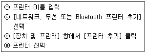
- (ㄱ) → (ㄴ) → (ㄷ) → (ㄹ)
- (ㄴ) → (ㄱ) → (ㄹ) → (ㄷ)
- (ㄷ) → (ㄴ) → (ㄹ) → (ㄱ)
- (ㄹ) → (ㄱ) → (ㄴ) → (ㄷ)
(정답률: 60%)
3과목: 컴퓨터 및 정보활용
41. 다음 중 컴퓨터의 수치 데이터 표현에서 고정 소수점 방식과 비교하여 부동 소수점 방식의 특징으로 옳지 않은 것은?
- 연산 속도가 매우 빠르며 수의 표현 범위가 넓다.
- 부호, 지수부, 가수부로 구성되어 있다.
- 소수점이 포함된 실수를 표현하는데 사용한다.
- 양수와 음수 모두 표현이 가능하다.
(정답률: 47%)
42. 다음 중 사용하는 데이터 형태에 따라 컴퓨터를 분류하고자 할 때, 아래의 설명과 같은 특징을 가지는 컴퓨터로 옳은 것은?
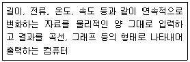
- 하이브리드 컴퓨터
- 디지털 컴퓨터
- 아날로그 컴퓨터
- 범용 컴퓨터
(정답률: 60%)
43. 다음 중 컴퓨터에서 사용하는 캐시 메모리에 관한 설명으로 옳은 것은?
- CPU와 주기억장치의 처리속도를 향상시키기 위하여 사용한다.
- 보조기억장치를 주기억장치처럼 사용할 수 있는 기능을 제공한다.
- 주기억장치를 접근할 때 주소대신 기억된 내용으로 접근하는 기능을 제공한다.
- EEROM의 일종으로 중요한 정보를 반영구적으로 저장할 수 있다.
(정답률: 62%)
44. 다음 중 아래의 보기에서 설명하는 컴퓨터의 그래픽 카드로 옳은 것은?
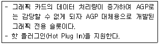
- SATA
- HDMI
- PCI-Express
- SCSI
(정답률: 35%)
45. 다음 중 컴퓨터의 연산장치에서 사용하는 레지스터에 대한 설명으로 옳은 것은?
- 상태 레지스터 : 연산에 사용될 데이터를 기억하는 레지스터이다.
- 인덱스 레지스터 : 주소 변경을 위해 사용되는 레지스터이다.
- 데이터 레지스터 : 연산중에 발생하는 여러 가지 상태 값을 기억하는 레지스터이다.
- 누산기 : 뺄셈의 수행을 위해 입력된 값을 보수로 변환하는 회로이다.
(정답률: 42%)
46. 다음은 프로그래밍 개발 절차이다. 괄호 안에 들어갈 내용이 올바른 순서대로 나열된 것은?
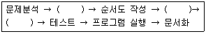
- 코딩 - 입출력 설계 - 번역과 오류 수정
- 입출력 설계 - 번역과 오류 수정 - 코딩
- 입출력 설계 - 코딩 - 번역과 오류 수정
- 번역과 오류 수정 - 코딩 - 입출력 설계
(정답률: 60%)
47. 다음 중 아래의 보기에서 설명하는 운영체제의 운영 방식으로 옳은 것은?
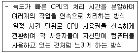
- 일괄 처리 시스템
- 듀플렉스 시스템
- 분산 처리 시스템
- 시분할 시스템
(정답률: 70%)
48. 다음 중 컴퓨터의 CMOS 설정에 대한 설명으로 옳지 않은 것은?
- CMOS는 바이오스에 내장된 롬의 일종으로 쓰기가 불가능하다.
- CMOS SETUP은 바이오스의 각 사항을 설정하며, 메인보드의 내장 기능 설정과 주변 장치에 대한 사항을 기록한다.
- CMOS SETUP의 항목을 잘못 변경하면 부팅이 되지 않거나 사용 중에 에러가 발생하므로 주의 한다.
- 시스템의 날짜/시간, 디스크 드라이브의 종류, 부팅 우선순위 등을 설정한다.
(정답률: 49%)
49. 다음 중 아래의 보기에서 설명하는 그래픽 기법으로 옳은 것은?
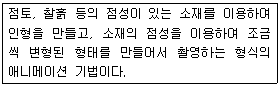
- 로토스코핑(Rotoscoping)
- 클레이메이션(Claymation)
- 메조틴트(Mezzotint)
- 인터레이싱(Interlacing)
(정답률: 73%)
50. 다음 중 인터넷 표준 그래픽 형식으로 8비트 컬러를 사용하여 256가지로 색의 표현이 제한되지만, 애니메이션도 표현할 수 있는 그래픽 파일 형식으로 옳은 것은?
- TIF
- PNG
- GIF
- JPG
(정답률: 75%)
51. 다음 중 데이터 통신의 프로토콜을 정의하는 OSI 7계층에 대한 설명으로 옳지 않은 것은?
- 물리 계층 : 네트워크의 물리적 특징 정의
- 네트워크 계층 : 데이터 교환 기능 정의 및 제공
- 세션 계층 : 데이터 표현 형식 표준화
- 응용 계층 : 응용 프로그램과의 통신제어 및 실행
(정답률: 59%)
52. 다음 중 웹 문서를 만들기 위한 프로그래밍 언어로써, 액티브 X를 설치하지 않아도 동일한 기능을 구현할수 있고, 어도비 플래시와 같은 플러그인 기반의 각종 프로그램을 별도로 설치하지 않아도 되는 프로그래밍 언어로 옳은 것은?
- VRML
- HTML5
- XML
- UML
(정답률: 61%)
53. 다음 중 전자우편에서 사용하는 프로토콜과 주소에 대한 설명으로 옳지 않은 것은?
- POP3는 2진 파일을 첨부한 전자우편을 보내기 위하여 사용한다.
- SMTP는 TCP/IP 호스트의 우편함에 ASCII 문자메시지를 전송해 준다.
- ks2002@korcham.net에서 @의 앞부분은 E-mail 주소의 ID이고, @의 뒷부분은 메일 서버의 호스트 이름이다.
- MIME은 웹 브라우저에서 지원하지 않는 멀티미디어 파일을 이용하는데 사용된다.
(정답률: 42%)
54. 다음 중 다른 사람의 컴퓨터에 잠입해 개인신상정보 등과 같은 타인의 정보를 사용자 모르게 수집하는 프로그램으로 옳은 것은?
- 백도어(Back Door)
- 드롭퍼(Dropper)
- 훅스(Hoax)
- 스파이웨어(Spyware)
(정답률: 65%)
55. 다음 중 아래의 보기에서 설명하는 최신 정보 기술로 옳은 것은?
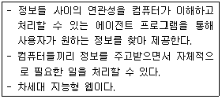
- 트랙백(Trackback)
- 와이브로(WiBro)
- 위키피디아(Wikipedia)
- 시멘틱 웹(Semantic Web)
(정답률: 53%)
56. 다음 중 아웃룩(Outlook)에서 정크 메일 폴더에 대한 설명으로 옳지 않은 것은?
- [받은 편지함] 폴더에 배달되는 메일 중 필터로 걸러진 불필요한 메일이 보관된다.
- 특정 주소나 도메인에서 보낸 메일을 무조건 [정크 메일] 폴더로 이동하게 설정할 수 있다.
- [정크 메일] 폴더를 비우면 보관하고 있던 메일은 [지운 편지함]으로 이동한다.
- [임시 보관함]에 있는 메일을 [정크 메일] 폴더로 이동시킬 수 있다.
(정답률: 54%)
57. 다음 중 아웃룩(Outlook)에서 작업 관리에 대한 설명으로 옳지 않은 것은?
- 작업 일정을 지정된 시간에 미리 알림 표시로 소리내기를 설정할 수 있다.
- 작업 일정을 매월 셋째 주 토요일마다 되풀이 되게 설정할 수 있다.
- 작성된 작업 일정을 전달할 경우에 크기의 제한이 없는 파일을 첨부할 수 있다.
- 완료된 작업은 제목, 상태, 기한, 완료율, 범주, 폴더 위치 등의 가운데에 줄이 그어져 표시된다.
(정답률: 53%)
58. 다음 중 정보 보안을 위협하는 스니핑(Sniffing)에 관한 설명으로 옳은 것은?
- 문자 메시지에 있는 인터넷 주소를 클릭하면 악성코드를 설치하여 개인 정보를 절취하는 행위이다.
- 네트워크에서 정상적인 데이터를 보낸 것처럼 데이터를 변조하여 접속을 시도하는 행위이다.
- 네트워크 주변을 지나가는 패킷을 절취하여 계정과 암호를 알아내는 행위이다.
- 악성 코드에 감염된 PC를 조작하여 정상적인 사이트에 접속하면 허위 사이트로 유도하여 개인정보를 절취하는 행위이다.
(정답률: 57%)
59. 다음 중 모바일 기기의 기본 기능에서 증강현실(AR)에 관한 설명으로 옳은 것은?
- 인터넷에 연결된 기기와 그렇지 않은 기기를 USB나 블루투스로 인터넷을 연결하는 기능이다.
- 무선랜 기술인 WiFi로 인터넷을 연결하는 기능이다.
- 기기에 내장된 카메라를 이용하여 실제 사물이나 환경에 부가 정보를 표시하는 기능이다.
- 10cm 이내의 가까운 거리에서 무선으로 데이터를 전송하는 태그 기능이다.
(정답률: 73%)
60. 다음 중 정보보안을 위한 비밀키 암호화 기법에 대한 설명으로 옳지 않은 것은?
- 대칭 암호화 기법 또는 단일키 암호화 기법이라고도 한다.
- 대표적인 암호화 방식은 DES(Data Encryption Standard)이다.
- 알고리즘이 단순하고 파일 크기가 작다.
- 공개키 암호화 기법에 비해 암호화/복호화 속도가 매우 느리다.
(정답률: 60%)